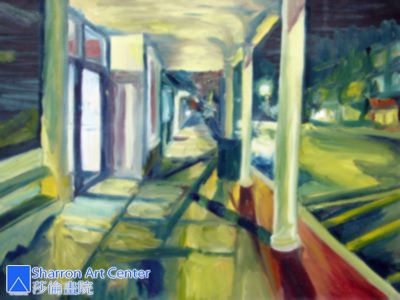

帮女儿申请大学
作者：含歌
得知莎伦画院的刘莎伦老师选择子琦的画做今年感恩节个人画展时，真的是受宠若惊。因为我知道刘老师要求之严和她学生作品水準之高，子琦的画真的还排不上前头。后来刘老师解释她每年选一位基督徒学生，在感恩节时开个人感恩画展，为主做见证。并请子琦或我写一篇感恩见证。我立刻想：是啊！主爱长濶高深，超过我们所求所想。我们若不开口赞美感谢，连石头都要开口了。主在诸多事上一再地向我家显示衪的信实和恩典。衪的供应常在我们还不知道我们需要时就已经预备好了。
主的恩典不尽胜数。限於篇幅，在此仅记与女儿申请大学有关之事。去年五月，文慧--我将近二十年的好朋友及同事，向我提起她女儿在跟刘沙伦老师学画，还给我看她女儿的得奖作品，并问我子琦不是也喜欢画吗？要不要去刘老师那里试看看。我说子琦是爱画，不过她现在十一年级，功课己经够忙的了，每晚都好晚睡，我看她是没法去的。文慧说：这对申请大学也很有帮助的。不过刘老师只收高班的学生，一般学生都先上其他老师的课。妳可能要带些子琦作品去给刘老师看看。并告诉我刘老师是一位很好的基督徒，很能因材施教并激发学生潜能。
初见面时，刘老师说：没学过画可以画这样哦？创意很好但不大会用材料。应该有潜力但要从基本素描学起。现在离申请学校时间实在太近了，需要每周至少两次课才可能凑足作品。几次接触后，刘老师极专业且高效率的作风与我印象中散漫的艺术家形象截然不同，这让我放心不少。诸位请別见笑。你如果有一位拖拖拉拉，上课常迟到，睡眠老不够，有几次功课做不完，干脆不上课在家做功课的宝贝，你或许可以多少体会一些我这个做妈的心情，和体谅我为何之前从不让女儿学画。之后刘老师要子琦参加暑期集训班，一周三次再加周末。我得早上先去公司上班，中午回家接她去老师那再回公司。下班先去老师那接她，再回家做饭。我们住在墨而本（Millburn） 这么两次来回，一天大约总共要三至四个小时的车程。我撑得住吗？何况那个暑假她还要专注在考SAT上，再加上我定意在那个暑假，她去大学之前把她身体养好。她体质弱对许多水果都过敏，长期睡眠不足以至精神老不集中。我已请了针炙医生来家为她和我冶疗。再则，依我这俗人的拙见，女儿这么娇小，要离家去大学之前，其实送去参加个战斗训练营，学些防身术可能还比学画实际些。但祷告之后心中蛮平安的就在和女儿商量后报名了。
当时有几位若歌教会的姊妹也来我家针灸，我常和她们招呼完了就跑，几次以后，最有爱心的王苏姊妹终于搞清楚，我赶来赶去是送我女儿去Piscataway学画，她立刻建议以后安排针灸时间表时，她排早上，结束回家时，她送子琦去上课，素玉则排在晚上，这样可以先接子琦再来针灸。如此就省了我好几趟旳车程。而且王苏还三不五时的给我们带吃的，让我觉得备受关爱。其实我跟这位针灸医生学了点皮毛，我帮著按摩王苏时，知道她身体并不好，但她助人的手却从不短少，有时她还得赶着送另一位弟兄去做化疗。我们这位看不见，摸不著的主，因为有了王苏和素玉这样的姊妹，祂的爱就成了真实。每次谢她们时她们都说反正顺路谢什么谢。我也不再多说以免见外，安心的享用来自主的帮助。但我并非真的天真到以为多绕几哩路加上红绿灯或可能遇上的塞车叫做＂顺路＂,我心里明白，若没有主的爱，隔两条街都不顺路。但正如时安弟兄所说的，能坦然接受人的帮助也是神的恩典，这是另一门神教的功课，不在此多说了。
那年暑假上完刘老师的集训课之后，回到学校，她的AP Art老师立刻注意到女儿的进步奇大。女儿告诉她，她在和一位刘老师学画，她老师告诉我，子琦该跟著这位刘老师，她会给子琦极大的帮助。自此女儿开始按著刘老师的进度，一幅又一幅的开始制作 portfolio。我不懂画，但对刘老师给与的中肯的建议的功夫佩服的不得了，每一幅画经过老师一两下的提示，整幅画好像就活起来了似的。
值得一提的是女儿在十年级时常有些怪念头，今天想当厨师，明天告诉我己和另外三个同学计划好了以后开糕饼店。隔几天想去非洲游学一年，再过几天改成欧洲。我呢，则以不变应万变，谨守主的教导--做父母的不可惹儿女的气。只说哦--。十年级末女儿偷偷报考学校的AP Art，考上后问我可不可以十一年级修AP Art。我说如果你时间分配的过来就可以。但自从女儿上了AP Art之后，十分专注在她的作品上，那些奇怪的念头就都没有了。
十二年级功课压力极重，刘老师的要求也绝不降低，看着女儿整夜赶工，满脸青春痘，实在心疼，就想减课了。老师一听，减课？我还想要她加课呢！考SAT？她的分数已经够高了不用再考了。但女儿成绩还不错，她自己也并未决定一定要唸艺术学校，所以仍然全方位準备各种可能。时间实在不够了，女儿决定不参观学校，多申请几家学校，录取的才去看。所以她申请了一些理想的综合学校，一些备用的综合学校，一些艺术学校，加起来共有十几家。
紧锣密鼓的最后阶段到了，告诉过诸位我家女儿的磨功，连老师也急起来了，不只一次告诉我子琦这么磨蹭蹭的，做不完的。我是爱莫能助，而且对女儿学画我只能说是不反对罢了。只好跟老师说，是妳的学生妳想想办法吧。刘老师说妳这个女儿天生就是要走这一行的妳不知道吗？最后一个月，加把劲，冲一下吧！我心中想：妳这么说因为妳是老师。我不催她因为我是母亲。走过人生冷暖，一个母亲想的，只是让女儿知道有一位爱她的主和支持她的家人和朋友，定时作息，以后享用劳碌所得，这比天份高进名校重要些。而且我们又不能跟著她去大学，除非她自己愿意改，否则这个磨磨蹭蹭的她，最好选间磨磨蹭蹭可以毕业的学校，不然以后我们这些端茶倒水敲边鼓的不在身边，她应付不了怎么办？女儿又是个自我要求高的孩子。谁能体会母亲的心呢？多少个子夜看到女儿还在灯下赶画，只想进她房里把画撕了，让她睡觉。几次陪她领奖，她的画不论是掛在纽瓦克画廊，孟克利画廊，其他私人画廊或是学校，呈现在我眼前的，不是她的画，而是她整晚赶画的辛苦和她瘦小的身影。但我也只能尊重并支持女儿的选择。
刘老师办的讲座可以说是让我不再排斥女儿去美术学院的关键。它让我有一个机会认识RISD(全美排名首位的罗得岛美术设计学院)。它是间非常注重效率，沟通技巧市场行销全方位训练的美术学院。它不断在各方面挑战学生，激发学生创作力。且在就业市场上口碑极佳。我想或许这就是我们这个磨磨秤秤的宝贝女儿需要的战斗训练营吧！
申请大学截止日期一天天逼近，女儿的慢功让人急到跳脚。记得新年夜，电视上在倒数时：十ˋ九˙˙˙六ˋ五ˋ四ˋ她才按下最后一个输入键，完成最后一家的申请程序。刚松口气，电脑确认的时间却是一月一日˙˙˙过期了？我能帮她的不多，只有将她的作品拿去电子照相，做成数位画及幻灯片，我再按照每家学校要求的规格做成ＣＤ。可是她的作品一拖再拖，诸位相信吗：我在圣诞夜前一天中午冲进照相馆，刚好看到正要关门的老板，千拜托万拜托，急件处理帮她赶工。还好女儿在他们举办的绘画比赛中得过奖，还算认识。他还帮我约了摄影师几天后来他的相馆照幻灯片。此时，女儿的最后一幅画还没画完呢！说好最后一幅两天后早上给他，下午全部完工后再来取，这样我才来得及做ＣＤ。一切安排妥当后给刘老师打电话，她说她愿意连夜帮忙指导最后一幅画。而且她建议我，幻灯片用网路服务，便宜又方便。可是照时间推算，刘老师拿到画，审查，传过去，快递来，就算完全无误，收到时已经十二月三十一号早上。太冒险了。老师帮忙帮到底了：建议最后一幅画老师审查完后，直接帮我们做成数位画，电传给我们，我们就可以和其他的数位画一起传给幻灯片网路服务站。不然可能来不及。
在此之前每次问女儿，她都说不用担心她全都会自己弄，可是现实生活中，我们的截止日期必须配合別人的时间表的。虽然送了礼，还是难忘拿数位画时，老板一边修画，他太太一边在旁等着他做完，才能去参加派对，偏偏越急越调不出想要的颜色，终于弄完了，千谢万谢，回家一看，急中有错，他给的不是我告诉他的电脑格式。找不到他了。到处打电话找正确软体，好改成学校要的电脑格式。寄RISD作品时，知道一家邮局七点关门，六点半到那时，他们说六点以后电脑就拒收次日快递了。服务员跑到后面，看邮车还在，拦住邮车，回来告诉我们就寄两日快递，只要赶上这班邮车都是一样的，明天会到。回想起这些事来，我一边写一边还觉胃痛。还好有主！送来了帮忙帮到底的老师，照相馆老板和夫人(他也没加收我们快件费用)，邮局服务员，缺了其中一个，女儿的portfolio都不可能及时完成并寄到。
还有件必须感谢主的：我在三月时出了个车祸，颈椎受伤，无法长途开车。要去马里兰美术学院参观的前一天，我打电话问刘老师有没有其他学生要去，可以轮流开车。老师说: ”没有吧？要去的早该去过了，而且子琦芝加哥美术学院都拿到了，何必去马里兰，不用去了。再说她应该会进RISD的。” 我说没拿到录取通知前谁也不敢说。后来告诉女儿，刘老师说不用去了。但她仍坚持一贯的主张，谁给的奖学金多就去哪一家，她不想一毕业就负一大笔债，还是要去看。我问她要是收到RISD录取通知是不是就可以不去马里兰了呢？她说好吧。我就低头跟我的主说：主啊！五个小时的车程去，参观活动一天，再五个小时的车程回来，怜悯我吧！若要我去，今晚教会聚会完就该直接去才安全。下午正要出门去诗班练诗，车才开出车道，就看见邮车在前面，直觉就停了车等着， 一看到从RISD来的大信封就低头感谢我的主。再看奖学金金额，只能说：祂是爱我(我女儿！)
主从不误事，祂的时间妙到你能察觉祂的幽默。从去年五月文慧告诉我刘老师（再晚，错过暑期班，女儿的portfolio就不可能做完了），女儿从一个从没学过画的孩子，经刘老师费神指导，又有爱心的王苏和素玉帮忙接送学画，照相馆老板和夫人，邮局服务员的帮忙。回头想想，只能称颂我家的奇妙救主!
其实，最需要主恩典的，是最后决定学校的时候。是去综合学校：华盛顿圣路易士大学(去年全美排名十二，比康乃尔大学还前)修双学位，还是去RISD（艺术学校的哈佛大学）。华盛顿圣路易士大学奖学金给的多得多且是综合学校，但太远。女儿去了之后对它的艺术部门非常失望，没有她想主修的商业设计系。许多朋友以为我担心女儿学艺术以后找不到工作。我想的是：在文艺广电界，是非观念常是很模糊的。要在真道上站立得稳，她要面对和放弃的可能只有主知道。我更怕的是她遇到位不信主又与现实脱节的配偶：柴米油盐，尿布奶瓶，帐单全是俗事，以女儿的善良耐心和毅力来看，以后妥协吃苦的恐怕是她。我也是此刻才体会为何母亲来美看我回去之后，整整哭了两个月。和女儿略略分享我所考量的。女儿说妳不想我去RISD，我就不去吧！我又想到那些到了四十岁才开始叛逆期，觉得人生虚渡，为別人活了半辈子而拋下一切要为自己的兴趣而活的案例。便对女儿说，妳要自己决定，不论妳选那一所学校我们都以妳为荣，只求主给妳够用的恩典。她选择RISD，我选择放手。
女儿在RISD过的非常开心，人也活泼起来。虽然忙到忘了打电话（哈！哈！哈！）但一到那就找到她喜欢的教会和团契。感谢主！我不在女儿身边，但主在！
祂是爱我(也包括你)！为我(你)舍己！没有什么是祂舍不得给我们的。
(Nov. 2009)
（后记：子琦原本是个极为安静的女孩，但进入RISD以后，变得开朗爱笑，回到莎伦画院探访，会主动和大家打招呼，交谈，这在以前是不可能的。第一年学习结束，她向母亲提出要休学一年，去周游世界，这是她从小以来的梦想，如今进入大学名校，一切都安定，终于有心情去实现。她的母亲打电话问刘莎伦老师的意见。刘老师回答很简练：“如果她能自己赚钱，就去！”子琦很顺利地在上海找到一家RISD欧洲裔校友投资的公司，做设计工作，半年后，开始她周游世界的计划。重新回到RISD上课时，她要比同学迟一年毕业，但是她已经比大家多了很多的阅历和人生经历，在学习和教会活动中都如鱼得水...
从最早被各种功课压得喘不过气来，对未来人生的方向犹豫不定，最后因著主的带领，通过莎伦画院的帮助，明确了人生的计划和方向，子琦的经历是所有莎伦学生的写照;子琦母亲的见证更是让很多做母亲的感动落泪...）